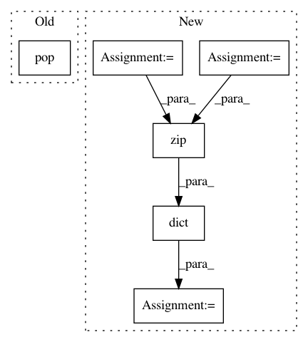

92bba3102bed7256aa22c0ab273139048aa23559,yellowbrick/classifier.py,ClassifierReport,score,#ClassifierReport#Any#Any#,78
Before Change
"labels": kwargs.pop("labels", None),
"target_names": kwargs.pop("target_names", None),
"sample_weight": kwargs.pop("sample_weight", None),
"digits": kwargs.pop("digits", 2)
}
self.report = classification_report(y_true, y_pred, **cr_kwargs)
After Change
Generates the Scikit-Learn classification_report
self.keys = ("precision", "recall", "f1")
self.scores = precision_recall_fscore_support(y, y_pred, labels=self.classes)
self.scores = map(lambda s: dict(zip(self.classes, s)), self.scores[0:3])
self.scores = dict(zip(self.keys, self.scores))
self._draw(y, y_pred)
def _draw(self, y, y_pred):
In pattern: SUPERPATTERN
Frequency: 3
Non-data size: 6
Instances
Project Name: DistrictDataLabs/yellowbrick
Commit Name: 92bba3102bed7256aa22c0ab273139048aa23559
Time: 2016-10-01
Author: bilbro@gmail.com
File Name: yellowbrick/classifier.py
Class Name: ClassifierReport
Method Name: score
Project Name: dmlc/gluon-cv
Commit Name: cd7fc53a118063d64dfb1b659cfb6fe4bfe9feda
Time: 2019-08-23
Author: 33575288+douglas125@users.noreply.github.com
File Name: gluoncv/model_zoo/yolo/yolo3.py
Class Name: YOLOV3
Method Name: reset_class
Project Name: dmlc/gluon-cv
Commit Name: cd7fc53a118063d64dfb1b659cfb6fe4bfe9feda
Time: 2019-08-23
Author: 33575288+douglas125@users.noreply.github.com
File Name: gluoncv/model_zoo/ssd/ssd.py
Class Name: SSD
Method Name: reset_class